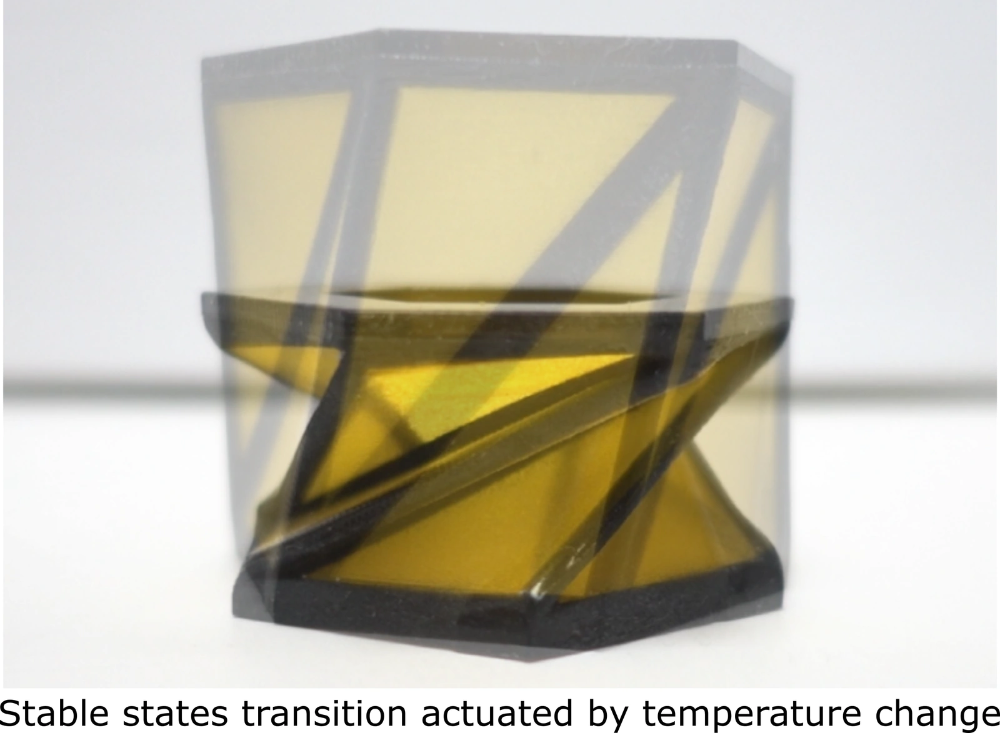

Mécanique multi-échelles
Relier les mécanismes locaux, comme la localisation des déformations et la propagation des fissures, à la réponse des pièces par des essais et des modèles à plusieurs échelles.

Métamatériaux mécaniques
Concevoir des architectures répétitives dont la géométrie gouverne la déformation, la transmission des charges et l’absorption d’énergie.

Structures multistables
Concevoir des structures capables de passer d’une forme stable à une autre par instabilité élastique et de conserver chaque forme sans actionnement continu.

Biomimétique et systèmes bio-inspirés
Comprendre comment les systèmes vivants exploitent la géométrie, l’organisation des matériaux et la croissance pour remplir des fonctions mécaniques.

Structures déployables inspirées de l’origami et du kirigami
Utiliser les plis et les découpes pour programmer le déploiement de feuilles planes en structures tridimensionnelles fonctionnelles.

Robotique souple
Concevoir des actionneurs et des mécanismes souples qui exploitent des déformations importantes et contrôlées pour interagir avec leur environnement.

Interactions fluide-structure
Étudier comment les écoulements déforment les structures souples et comment cette déformation modifie l’écoulement environnant.

Fabrication additive
Développer des procédés d’impression qui contrôlent la géométrie et la structure interne des pièces pendant le dépôt.

Fabrication additive de composites intelligents
Intégrer des fonctions de mesure et d’actionnement directement dans les pièces composites fabriquées par impression 3D.

Jumeaux numériques et IA guidée par la physique
Combiner des modèles physiques, des données de capteurs et l’apprentissage automatique pour estimer l’évolution de l’état des structures et des procédés.